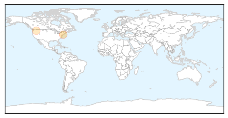
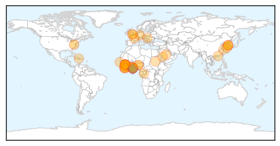

Pertussis
30-Day Web Trend
0 alerts, 0 warnings

30-Day Twitter Trend
0 alerts, 0 warnings

Article Locations
Article Confidences

Top Articles:
Top Tweets:
-
No tweets found for Jun 18, 2015
Ebola
30-Day Web Trend
0 alerts, 0 warnings

30-Day Twitter Trend
0 alerts, 0 warnings

Article Locations
Article Confidences

Top Articles:
- 1.000
- The Middle-East Respiratory Syndrome- the new epidemic
- 1.000
- Ebola Doesn’t Disappear at Zero and Neither Will We
- 0.999
- PHE study finds Ebola virus mutated slower than first thought - News Press Release
- 0.999
- Ebola cases dip slightly, but hot spots persist
- 0.999
- WHO chief says no mutation of MERS virus found in S. Korea
- 0.999
- PHE study finds Ebola virus mutated slower than first thought
- 0.998
- Tracing Ebola’s Evolution
- 0.998
- Ebola study to examine long term effects in survivors commences in Liberia
- 0.997
- EU-funded study into virus mutations marks breakthrough in fight against Ebola
- 0.996
- Disease infects 160 people but is not a 'global emergency'
- 0.996
- Disease infects 160 people but is not a 'global emergency'
- 0.996
- Staying at Zero Keeping Ebola Out of Liberia
- 0.996
- Study finds Ebola virus mutated slower than first thought
- 0.996
- First Ebola Epidemic May Have Happened in Ancient Greece
- 0.995
- Liberia dismisses speculations of new Ebola outbreak
- 0.994
- Study: Ebola virus mutated more slowly than thought
- 0.993
- The World On Arirang
- 0.992
- Britain is Ready for MERS Virus, Says Public Health Body
- 0.992
- 7 lessons from the MERS outbreak in South Korea
- 0.988
- Ebola DNA sequenced to track outbreak (Wired UK)
- 0.988
- UK expert warns of disaster if lessons are not learned from Ebola outbreak
- 0.987
- Customs ramping up airport efforts to keep out deadly MERS virus
- 0.985
- EU-funded Study Into Virus Mutations Marks Breakthrough In Fight Against Ebola
- 0.973
- Minister Of Health’s Statement to Parliament on proposed anti-Ebola Vaccine Clinic Trials
- 0.970
- Statement to Parliament on the proposed anti-Ebola vaccine clinical trials in Ghana
- 0.970
- Army Researchers Work to End Ebola Virus
- 0.970
- Sierra Leone: The Ebola crisis in West Africa - Humanitarian Exchange Magazine Issue 64
- 0.969
- Statement to Parliament on the proposed anti-Ebola vaccine clinical trials in Ghana
- 0.967
- Ebola vaccine test has not started in Ghana – Segbefia
- 0.957
- Study shows how Ebola has evolved during the West Africa outbreak
- 0.951
- Doctor who fought Ebola inspires Academy of Notre Dame grads
- 0.930
- MERS, hand sanitizers, and Ebola
- 0.920
- The Ebola crisis in West Africa - Humanitarian Exchange Magazine Issue 64 - Sierra Leone
- 0.901
- Ghana launches public campaign on safety of Ebola vaccine trial
- 0.891
- Fr. Peter Konteh of Caritas Freetown on the Needs of Ebola Orphans Vatican Radio
- 0.875
- After the Ebola Epidemic... What's Next for Africa?
- 0.836
- Ebola monitoring up in Virginia
- 0.829
- British Embassy hosts afternoon tea to thank Korean medical personnel
- 0.674
- Ebola Vaccine trial sensitisation starts today
- 0.665
- There shall be no wrong doing under our watch: WHO on ebola trial in Ghana
- 0.554
- Women Group Donates Items to Ebola Orphans in Liberia
- 0.546
- The Liberian Observer
- 0.527
- Health Ministry begins public education on Ebola vaccine trial
Top Tweets:
- 0.955
- Ebola Update: 27309 confirmed probable & suspected cases reported in 3 most affected countries with 11169 deaths. EbolaResponse
- 0.761
- Study shows how Ebola evolved during the outbreak in West Africa - Medical Xpress http://t.co/4GU149zjD3
- 0.748
- Temporal and spatial analysis of the 2014-2015 Ebola virus outbreak in West Africa http://t.co/esPhCG6c2v
- 0.684
- Ebola quarantine to continue at Fort Monmouth - Asbury Park Press http://t.co/sbCUwfFhnz ebola EVD
- 0.684
- Ebola quarantine to continue at Fort Monmouth - Asbury Park Press http://t.co/Xg5mBqxpKl ebola EVD
- 0.644
- Ebola Vaccine trial sensitisation starts today - GhanaWeb http://t.co/P15ro2IB2L ebola EVD
- 0.594
- Ebola showed aid delivery desperately needs an overhaul - Reuters http://t.co/7g2Wvz85QH ebola EVD
- 0.576
- Ebola showed aid delivery desperately needs an overhaul - Yahoo News http://t.co/WlJXy8NbPM ebola EVD
- 0.553
- Milwaukee receives $111000 grant for Ebola preparedness - WDJT http://t.co/jidUhSY9sS ebola EVD
- 0.507
- Faith Fear and Politics: PW Talks with Ebola Survivor Kent Brantly - Publishers Weekly http://t.co/OL4rqAJnNd ebola EVD